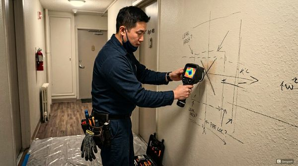

제우스시설관리 | 2025년 4월
집에서 하수구 냄새가 난다면 불쾌한 것은 물론, 건강에도 해로울 수 있습니다. 하수 가스에는 황화수소, 메탄, 암모니아 등 유해 성분이 포함되어 있어 두통, 메스꺼움, 호흡기 문제를 유발할 수 있습니다.
배수 트랩의 U자 부분에 고여 있는 물(봉수)이 하수 냄새를 차단합니다. 장기간 사용하지 않으면 이 물이 증발하여 냄새가 올라옵니다. 해결: 사용하지 않는 배수구에 주 1회 물 한 컵을 부어주세요.
배관에 축적된 음식물, 머리카락 등이 부패하면서 악취를 발생시킵니다. 해결: 정기적인 배관 세척이 필요합니다.
배관 연결부의 실리콘이 노후되거나, 연결이 느슨해지면 틈새로 냄새가 새어나옵니다. 해결: 배관 연결부 재밀봉 또는 교체.
건물 지붕으로 올라가는 통기관이 막히면 배수 시 부압이 발생하여 트랩의 봉수가 빨려나갑니다. 해결: 통기관 점검 및 청소.
노후 배관의 균열이나 파손으로 하수가 새어나오면서 냄새가 발생합니다. 해결: 내시경 점검 후 부분 보수 또는 교체.
세탁기 배수호스가 직접 하수관에 연결되면, 하수 냄새가 세탁기를 통해 역류합니다. 해결: 트랩이 있는 배수구로 연결하거나 역류 방지 밸브 설치.
에어컨 배수관이 하수관에 직접 연결된 경우, 에어컨 미사용 시 냄새가 역류합니다. 해결: 배수관에 트랩 설치.
냄새 원인을 정확히 파악하기 어렵다면?
제우스시설관리의 전문 기술자가 내시경 카메라와 연기 시험으로 냄새 원인을 정확히 찾아드립니다. 무료 출장 상담: 010-4406-1788
